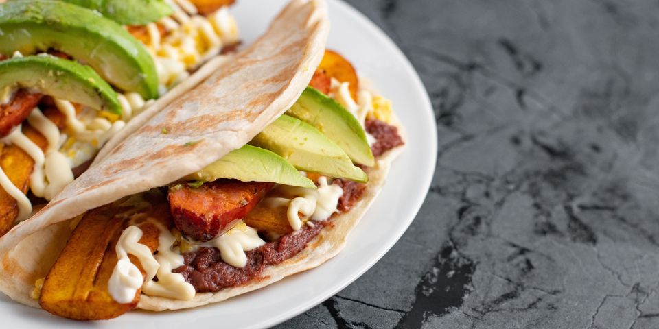

Baleada Recipe

Description
The Baleada, originated from the country of Honduras, consist of
a flour tortilla, smashed beans and cream.
Some adds on are eggs, sweat plantains and avocado
ingredients
- Flour tortilla
- Smashed beans
- Cream
Steps
- Heat the flour tortilla on a pan at medium heat
- Once the tortilla is ready add the beans
- Put the cream over the beans
- Fold the tortilla on half
- Enjoy!